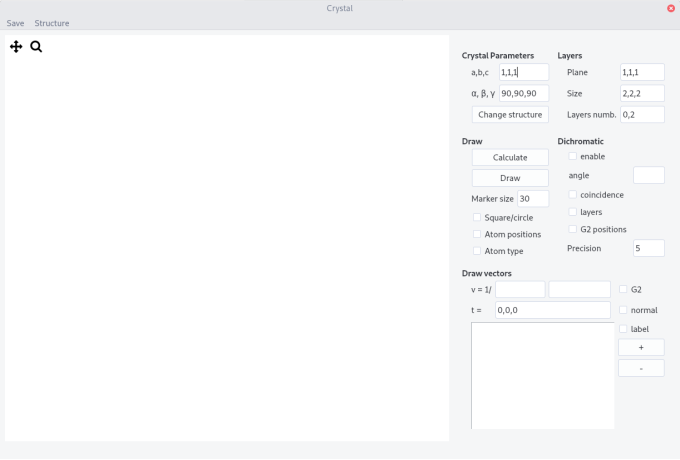
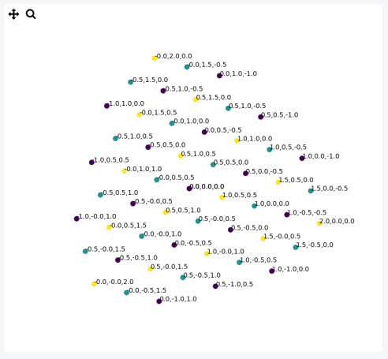
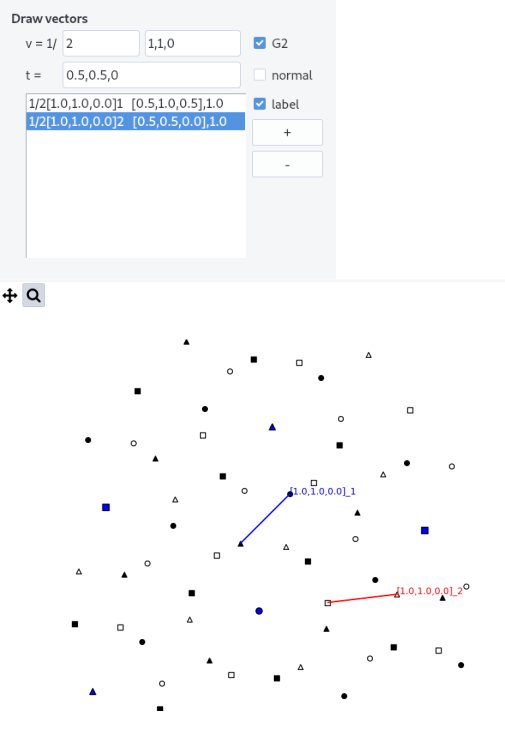

Crystal
crystal allows to display crystal projection on a plane and draw dichromatic patterns.
Interface¶
The interface is composed of a top bar menu, a plotting area to display the projection and a setting panel.

Procedure¶
-
Enter the Crystal Parameters, either from the input fields or from the structure menu
-
Fill the
Planefield and theSizeof the crystal box (integer units of the lattice parameters). -
Enter the layers indices (
Layers numb.) parallel to the projected plane according to the scheme n_0,n_1, n being the layer number. -
Press the
Calculatebutton. You will be prompted to select the appropriate crystal structure. Text files such ascfc.txtdescribe the position of atoms in the unit cell. The format is:
atom1 x1 y1 z1
...
atomn xn yn zn
v1x v1y v1z
...
vkx vky vkz
with atomn is nth atom in the cell at coordinate xn, yn, zn and vkx,vky,vkz is the kth translation vector defining all the positions of atoms in the cell.
-
Press the
Drawbutton. -
Tick
Atom typebutton to see the different atoms (label with different numbers) -
Tick
Atom positionbutton to see the coordinates

Projection of 3 layers of the (1,1,1) plane in an Al crystal
Layout¶
-
Change the
Marker sizeand shape using theSquare/circlebutton -
Zoom in, move and save the figure using the tool bar
Dichromatic pattern¶
A so-called dichromatic pattern is formed when two misoriented crystals are interpenetrated. The pattern is drawn according the usual convention: black and white crystals correspond to two different grains and different symbols to different layers (note that you can plot up to 7 different layers with different symbols).
-
To draw it tick the
enablebox -
Enter a rotation
anglebetween the two crystal along the plane normal. -
Recalculate (press
Calculate) and thenDraw -
Tick the
coincidencebox to highlight coincident site positions (need toCalculateagain). The precision by which is defined coincidence can be tuned in theprecisionfield. It is expressed in % of the largest lattice parameter. -
Tick the
layersbutton to show the layer number on the dichromatic pattern. From layers 0 to 5, markers are circles, squares, triangles, stars and hexagons, respectively. After they are all circles. -
Tick the
G2 positionsto draw atom position in the rotated crystal.

Example of a dichromatic pattern in a (1,1,1) plane with a misorientation angle of 38.21°, in Al.
Draw vectors¶
Vectors can be plotted in direct or in reciprocal (plane normals) spaces either in a grain or in a dichromatic pattern.
-
Fill the
vfield with both a fractionnal constant and crystal indices. -
Press
+button to add the vector to the list. Zoomed pattern are not reset when vectors are added. PressDrawto reset view. -
Vectors in the list appear as:
1/k [u,v,w]_i [t1,t2,t3], z,zis the scalar product with the projected plane direction, i.e. indicate the out of figure coordinate. -
Shift a vector by changing the origin to the position
t(default is [0,0,0]).tshould be indicated in the directed space of the grain which can be easily found by plotting atom positions. -
Select a vector and remove it by pressing the
-button. By default, the last vector enter is selected. -
When
normalbox is ticked thevvectors is treated as a plane normal. As it is much shorter the fractionnal value can be set less than 1. -
Tick
G2to draw vectors in the second rotated crystal. -
Tick
labelto show labels associated to directions[....]_1,2or plane normals(...)_1,2
